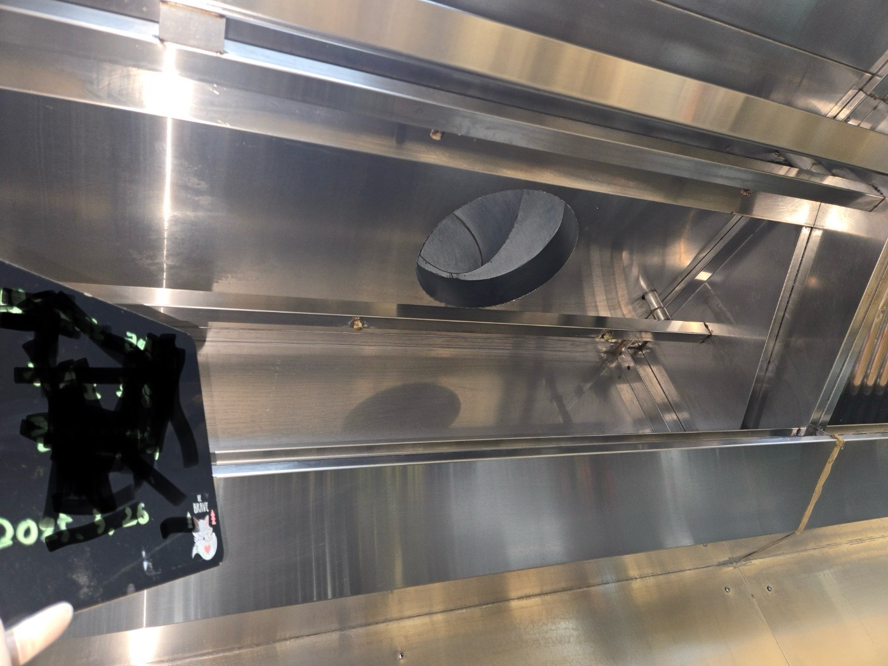
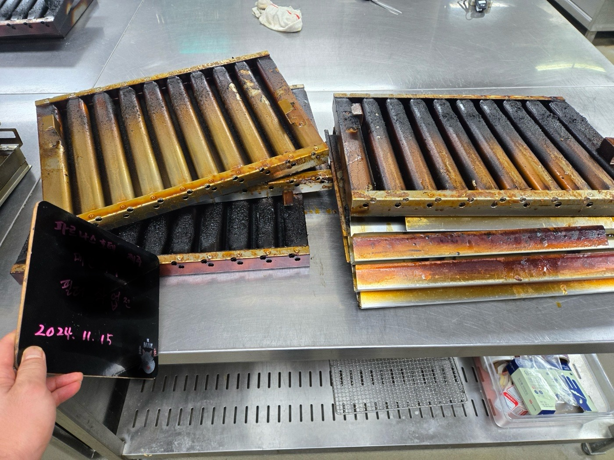
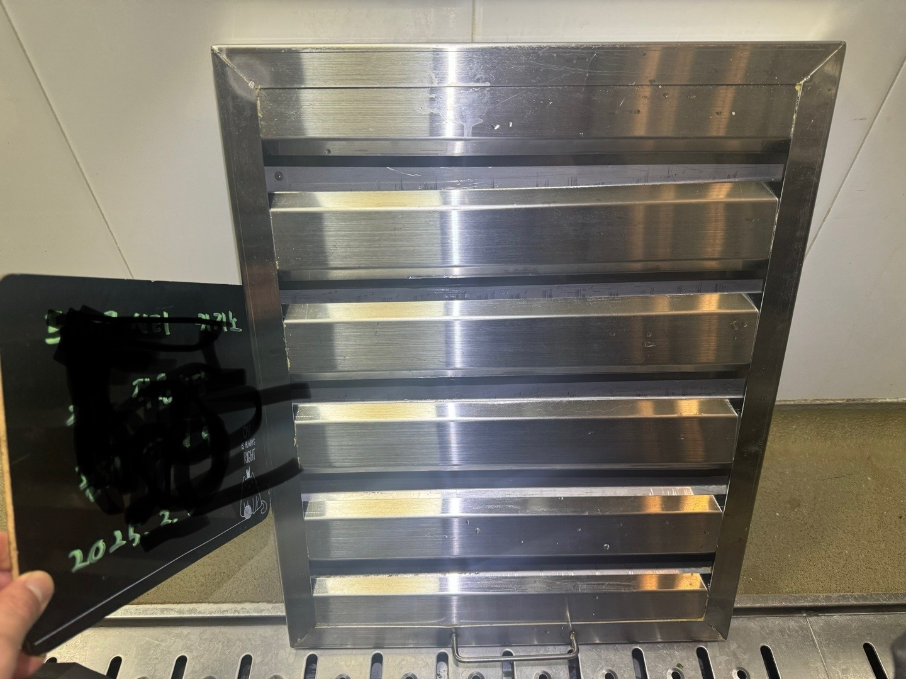

눈에 보이지 않는 곳까지, 에이비씨클린은 다릅니다.
설비 수명, 주방 위생, 화재 예방까지 위협하는 아래와 같은 주방 후드 문제를 겪고 계신가요?
- 후드에서 기름이 뚝뚝 떨어지는 문제
- 천장에 보기 싫은 얼룩이 생기는 문제
- 팬의 흡입력이 점점 약해지는 문제
- 모터에서 시끄러운 소음이 들리는 문제
이런 현상은 단순 청소나 팬 교체만으로 해결되지 않습니다. 문제의 정확한 원인을 찾아 해결해야 근본적인 개선이 가능합니다. 에이비씨클린은 덕트·후드 전문 청소 업체로, 후드와 덕트 내부, 가지관, 배기팬까지 라인 전체를 점검하고 정밀하게 청소하여 문제를 해결합니다.
- 닥트 전문 청소팀
- 분해·절단·약품·수작업을 통한 정밀 청소
- 가지관 교체 및 누유 방지 마감 처리까지
- 후드에서 닥트까지 전 라인 원스톱 관리

작업사진

▲ 후드청소
▲ 덕트청소


▲ 필터청소